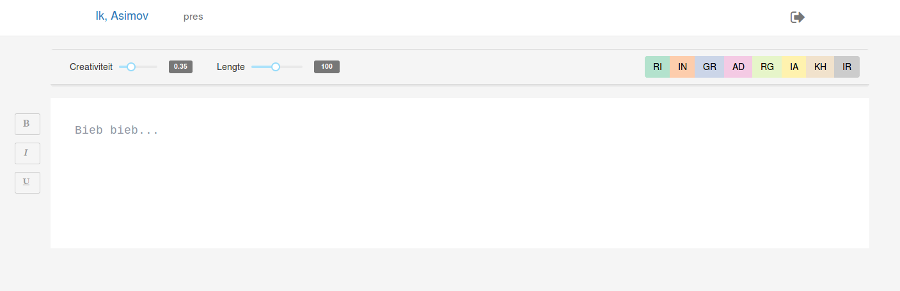
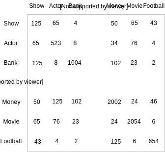
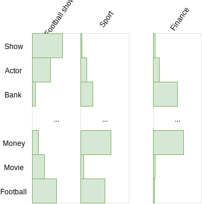
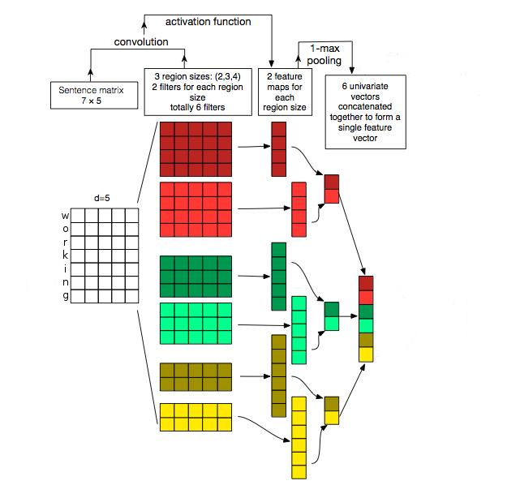

Synthetic Literature
Writing Science-Fiction in a Co-Creative Process
Enrique Manjavacas & Folgert Karsdorp & Ben Burtenshaw & Mike Kestemont
NLP MeetUp - Antwerp - 01/02/2018
https://emanjavacas.github.com/slides-content/antwerp-nlpmeetup-18
1 Background
- Stichting Collective for the Promotion of the Dutch Book (CPNB)
- Dutch Book Week
- The theme of robots, based on the novel “I, Robot” by Isaac Asimov
- In collaboration with an established Dutch author: Ronald Giphart
The Request
Write a story about robots, using a robot, in relation to “I, Robot”
The Proposal
Co-creatively write a science-fiction story using a system trained on similar literature
The Author: Ronald Giphart
2 Co-creativity
… a collaborative process between multiple agents, where in this context, one agent is a computational system. […] where crucially, the result of the output is greater than “the sum of its parts” (Davis 2013)
Different Takes on Co-creativity
- Lubart (2005) clarifies co-creativity into four distinct roles for a computational system
- Computer as nanny, penpal, coach or colleague
Computer as colleague
- A competent agent within the writing process
- A verifiable contribution to the end product
- An agent that challenges the user in a meaningful way
Computer as penpal
- A subordinate agent, that eases the objective of the user
- Does not challenge the user
3 Method
Data Collection and Preprocessing
- Large collection of Dutch novels: 4,392 novels by 1,600 authors
- Tokenization (sentence boundary, paragraph and quotation detection) with the software UCTO
Statistics
| Sentences | Words | Characters | |
|---|---|---|---|
| Number | 24.6m | 425.5m (NLWiki: >300m) | 2001m |
| Novel Average | 3k | 59k | 309,531k |
Recurrent Neural Network Language Model (RNNLM) for Text Generation
Language Model
\(P(The, cat, sat, on, the, mat, .)\) =
\(P(The | \text{<}bos\text{>})\)
* \(P(cat | \text{<}bos\text{>} , The)\)
* \(\ldots\)
* \(P(. | \text{<}bos\text{>} , \ldots , mat)\)
More formally…
\(P(w_1, w_2, ..., w_n)\) = \(P(w_1|\text{<}bos\text{>})\) \(* \prod_{i=2}^n P(w_{i}|w_1, ..., w_{i-1})\)
RNNLM Implementation (Embedding + RNN Layer + Output Softmax)

Text Generation
Sample “n” characters from the Language Model
- \(w_1 \sim P(w|\text{<}bos\text{>})\)
- \(w_2 \sim P(w|\text{<}bos\text{>}, w_1)\)
- \(\ldots\)
- \(w_n \sim P(w|\text{<}bos\text{>}, w_1, ..., w_{n-1})\)
Multinomial sampling with temperature
- \(w_1 \sim P(w|\text{<}bos\text{>})\)
- \(\Rightarrow w_1 = \{p_1, p_2, ..., p_v\}\)
- \(p_i^{\tau} = \frac{p_i / \tau}{\sum_j^V p_j / \tau}\)
Character-level
We run the model over characters
- Help us solving the OOV problem
- Much faster generation (smaller output distribution)
- Virtually expands the amount of training data
Model fitting
- Different parameter configurations resulting in different model sizes
- Sizes range from medium (10M) to big (90m)
Model parameters
| Parameter | Range |
|---|---|
| Embedding sizes | 24, 46 |
| RNN Cell | GRU, LSTM |
| Hidden size | 1024, 2048 |
| Hidden Layers | 1 |
Training
Stochastic Gradient Descent (SGD) + bells and whistles
| Parameter | Value |
|---|---|
| Optimizer | Adam (default params) |
| Learning rate | 0.001 |
| Gradient norm clipping | 5.0 |
| Dropout | 0.3 (RNN output) |
| BPTT | 200 |
Voices
- Text Generation System that emulates the style of a particular author
- Reuse a pre-trained model and fine-tune it on the desired author
- Force overfitting on the author’s training data
4 User Interface
User Interface
Annotation
5 Output
- A new dutch edition of ’I, Robot’ with a 10th co-created story was published in November 2017
- The interface was deployed for the general public during November 2017 (averaging 200 users/day)
- User-generated data can be used for evaluating the co-creative process
6 Ongoing work
From character-level to word-level
| Character-level | Word-level | |
|---|---|---|
| Vocabulary | Smaller (<1000) | Larger (≃ 3m) |
| Dataset size | Larger (<2000m) | Smaller (>425m) |
| Preprocessing | None | Tokenization |
| Overfitting | Not a problem | Quite a problem |
| Dependency span | Smaller (BPTT 250 ≃ 50 words) | Larger |
| Output distribution | Not too interesting | Quite interesting |
Opening new horizons (Mixture Models)…
- Pointer-based Language Models
- Latent Topic Language Models (credits to Tim van de Cruys)
Mixing output distributions 1: Pointer-based Language Models

- Results in better model perplexity (=> better output distributions)
- Can generate OOV words if they occur in the sentence history
- Tighter coherence of the generated text with user input
Mixing output distributions 2: Latent Topic Language Models
Non-Negative Matrix Factorization
Word co-occurrence matrix
Latent topics (unnormalized distributions over words)
Latent Topic Language Model

- Enforces topic coherence across the entire sequence
- Enables topics during generation (tweaking the distribution over topics)
… and challenges (due to the large vocabulary)
- Slow training due to parameter explosion (embedding size x vocabulary)
- Output distribution rely too much on
<Unk>
Solutions for the input embeddings
Process input at the character level producing word-level embeddings (CNN, RNN)
Solutions for the output embeddings (during training)
Since reducing the vocabulary size is not advised, speed up the Softmax computation during training